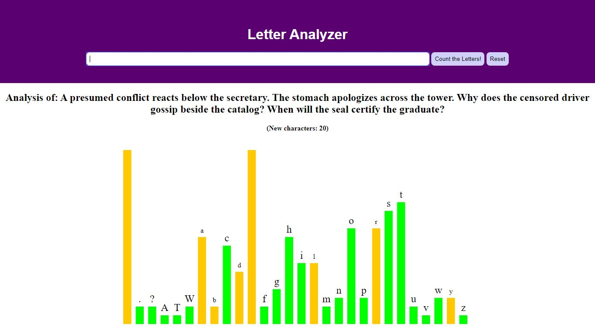

D3
Data Visualization
- Project 1 - Notes Adder / D3 DOM
- Character Frequency - User Input
- D3 & SVG Flags
- Horizontal Bar Chart
- Vertical Bar Chart
- Realtime YTD Analytics
- Project 2 - Dynamic Bar Chart
- Scatterplot
- Project 3 - Gapminder

